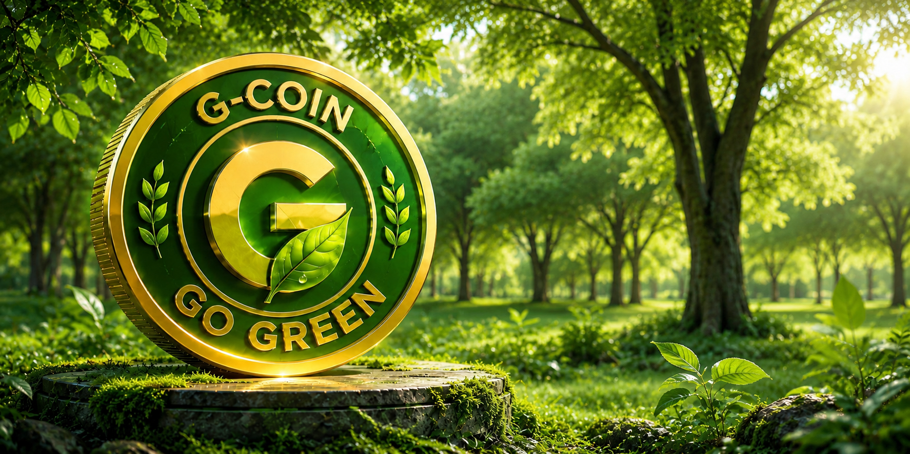

Go Green (G Coin) is a community-driven blockchain project dedicated to promoting sustainability, transparency, and long-term environmental impact through decentralized technology.
Go Green (G Coin) is more than a meme coin. It is a community-powered ecosystem built on the Solana blockchain, designed to unite people who believe technology can help create a cleaner, greener, and more sustainable future.
The project combines blockchain innovation with real-world environmental awareness, encouraging transparency, community participation, and responsible ecosystem growth. Every milestone is focused on building long-term value instead of short-term hype.
Our vision is to create a trusted global community where blockchain technology supports sustainability initiatives, inspires environmental responsibility, and empowers individuals to participate in positive change together.
Go Green (G Coin) is committed to openness, innovation, and continuous development while building a transparent ecosystem that benefits both the community and the environment.
One Community. One Mission. One Greener Future.
To become the world's most trusted community-driven green blockchain project, inspiring millions of people to support sustainability while embracing decentralized technology.
Addressing environmental challenges through community, transparency, and blockchain innovation.
Climate change, deforestation, pollution, and carbon emissions continue to threaten ecosystems and future generations. Although awareness is increasing, many environmental initiatives still struggle with limited transparency, fragmented communities, and insufficient long-term engagement.
At the same time, many blockchain projects focus mainly on short-term speculation instead of creating meaningful, transparent, and sustainable community value.
Go Green (G Coin) combines the speed and transparency of the Solana blockchain with a global community that promotes sustainability, education, and long-term environmental awareness.
Building a transparent, community-driven ecosystem that connects blockchain technology with sustainability.
Go Green (G Coin) is designed as a community-first ecosystem powered by the Solana blockchain. The project brings together supporters, developers, creators, environmental advocates, and long-term holders under one shared mission of building a greener future.
The ecosystem will continue to evolve through community engagement, educational initiatives, strategic partnerships, and sustainability-focused programs.
Go Green (G Coin) believes a strong community is the foundation of every successful decentralized project. Every supporter contributes to building a transparent, sustainable, and globally recognized ecosystem.
A transparent and sustainable token distribution model designed to support long-term ecosystem growth and community participation.
No Pre-Mint • No Private Sale • No Insider Allocation.
Every participant, including the core team, acquires G Coin through the public market under the same conditions.
| Item | Details |
|---|---|
| Token Name | Go Green |
| Token Symbol | G Coin |
| Blockchain | Solana |
| Network | Solana Mainnet |
| Token Standard | SPL Token |
| Total Supply | 1,000,000,000 G Coin |
| Decimals | 0 |
| Public Ecosystem | 70% |
| Ecosystem Reserve | 30% |
| Burn Policy | 50% of the total supply is permanently reserved for future community-approved burn events to support long-term ecosystem sustainability. |
Our roadmap outlines the long-term vision of building a transparent, community-driven ecosystem focused on sustainability and continuous innovation.
Building trust through transparency, accountability, and active community participation.
Go Green (G Coin) is a community-driven ecosystem where holders and supporters are encouraged to share ideas, provide feedback, and participate in discussions that help shape the future of the project. As the ecosystem grows, governance mechanisms may evolve to strengthen community participation.
Transparency is one of the core principles of Go Green (G Coin). Important announcements, ecosystem updates, roadmap progress, and future developments will always be shared through our official communication channels.
The project is committed to responsible development, open communication, and continuous improvement. Decisions will always prioritize the long-term health of the ecosystem and its community.
Go Green (G Coin) believes that a strong community is the foundation of long-term success. Together, we aim to build a transparent, sustainable, and trusted ecosystem that creates lasting value for future generations.
Go Green (G Coin) is committed to responsible development, transparency, and continuous improvement while recognizing the inherent risks associated with blockchain technology and digital assets.
Security is a top priority for Go Green (G Coin). The project follows industry best practices and will continue improving its infrastructure, smart contracts, and ecosystem security as development progresses.
Future smart contract audits, infrastructure upgrades, and additional security improvements may be implemented to strengthen the reliability and transparency of the ecosystem.
Cryptocurrencies and blockchain-based assets involve significant risks, including market volatility, regulatory changes, technological challenges, and unforeseen events. The value of digital assets may increase or decrease substantially over time.
Community members and participants are encouraged to conduct their own independent research before making any financial or participation decisions.
This Whitepaper is provided for informational purposes only. It does not constitute financial, investment, legal, or tax advice. Nothing contained in this document should be interpreted as a guarantee of future performance or investment returns.
Go Green (G Coin) remains committed to building a transparent, community-driven ecosystem focused on sustainability, responsible innovation, and long-term development. Trust and transparency will always remain at the core of our mission.
Stay connected with Go Green (G Coin) through our official communication channels for the latest updates, announcements, and community engagement.
https://gogreencoin-g.github.io/gogreencoin/
https://x.com/gogreencoinx
https://t.me/Gcoinmeme
gogreengcoin@gmail.com
Go Green (G Coin) is committed to building a transparent, community-driven ecosystem that combines blockchain innovation with environmental awareness. Together, we aim to create a greener, more sustainable future—one community, one mission, one ecosystem.